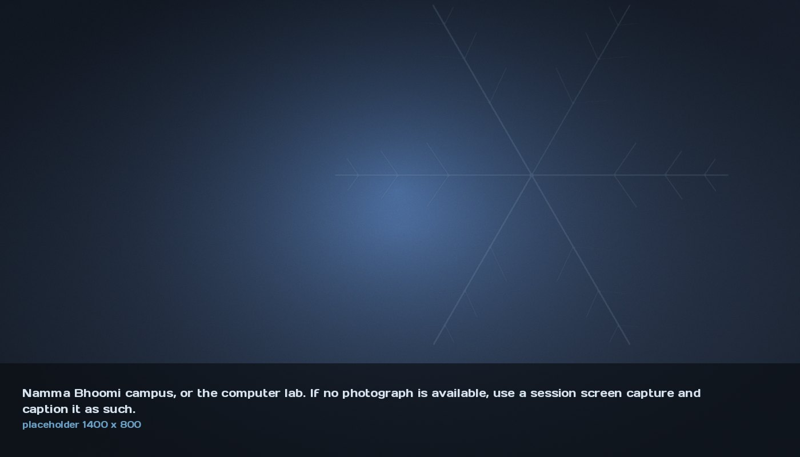

International access
Namma Bhoomi
A residential campus in Karnataka, India, for children who have worked for a living. It has a computer lab, a vocational training institute, and a children’s council that governs the place. What it did not have was robotics. We send kits, and we teach across a nine and a half hour time difference.
- Where
- Near Kundapura, Udupi District, Karnataka, India
- Run by
- The Concerned for Working Children
- Our part
- Robotics kits and remote instruction
Everything else on this site happens within about thirty miles of Ashburn. A library room, a learning centre, a school hall. This one is eight thousand miles away and it has changed how we teach more than any of the others.
What the place is
Namma Bhoomi means our land in Kannada. It is a residential campus of roughly eighteen acres in the foothills of the Western Ghats, on the banks of the Varahi river near Kundapura, and it was built for working children: children who have held jobs, often from a young age, and who are picking up an education that most systems assumed they had already missed.
It is run by The Concerned for Working Children, a nonprofit founded in Bengaluru in 1985. The campus houses a school and a professional training institute, with residential accommodation for around two hundred children, staff housing, a library, a medical infirmary, a dairy farm, agricultural land, and a computer lab.
The detail that matters most is not in the facilities list. Children at Namma Bhoomi annually elect a Makkala Panchayat, a children’s council, which governs decisions about the place they live in. The campus was designed in consultation with the children themselves. It is run on explicitly democratic principles, and it is deliberately structured to break down caste, gender and religious boundaries between the people living there.

How we got involved
Through the connections our own community already had. This is not a programme we invented and then went looking for a recipient of. Somebody knew somebody, a conversation happened, and the question that came back was practical: the lab exists, the children are already learning technical subjects, could robotics fit alongside that.
We want to be precise about what is there and what we add. Namma Bhoomi’s professional training institute prepares young people for careers in industry, retail, services and traditional crafts. It has a computer lab. It does not have, and we are not claiming it has, an established robotics programme. What we send are kits, and what we run are sessions.
What nine and a half hours does to teaching
The time difference is the constraint that shaped everything. When it is a workable evening in Karnataka it is early morning in Virginia, and the overlap where both a student instructor and a room of children are awake and free is narrow. We cannot improvise. We cannot lean over and adjust somebody’s gear train.
So the material has to survive on its own. Every session has a written guide that works without us: what the parts are, what to build, what should happen, and specifically what it looks like when it goes wrong and what to do then. That last section is the one we kept having to expand, because a failure mode we would fix in four seconds in a room becomes a dead twenty minutes when nobody present has seen it before.
This has made us better. Genuinely, measurably better. The build and programming guides in our Open Access library are clearer than they were, and the reason is that they were rewritten by students who had watched somebody eight thousand miles away get stuck on a step we thought was obvious.
What we send
- Robotics kits, with every part labelled against the guide that uses it
- Printed build guides, written to work with no instructor present
- Programming material aimed at the machines that are actually in the lab, not the ones we wish were
- Scheduled remote sessions, in the overlap window, run by our students
Why this counts as access and not charity
Because the thing being distributed is not equipment. It is the assumption that this is for you. Every child at Namma Bhoomi has already been told, structurally and by circumstance, that certain futures are not theirs. A robotics kit does not undo that. A robotics kit plus somebody turning up on a screen every fortnight, on purpose, who expects them to have finished last time’s build, is a slightly different message.
It is also the honest test of whether we mean the open part of Open Access. Publishing a notebook costs us nothing. Teaching into a room we have never stood in, at seven in the morning, to children whose first language is not the one the guide is written in, costs us something. That is roughly the point.
If you work with a school or a programme outside the United States and you want the same material, it is free and it is already published. Take it.
Confirm shipment dates, kit counts and the session schedule, and this page can carry specifics instead of description.